Every dataset used in the project: what it is, why it matters, where it was downloaded from, and where the real file sits on this PC. Pictures are real previews rendered from your own files.
C:\SWAT_Ogun and the project's models\factors folder (~2 GB total) — they were left in place to save disk space. Open any of them live in QGIS during your defense to prove the download.A short, natural script. [brackets] = what to do. Speak in your own words — this is just the spine.
[This page is already open — point to it.] "It lists every dataset — what it is, why I used it, where I downloaded it, and where the real file sits on this computer. The pictures are made from my own files."
[Point to the DEM picture.]
[Point to the Rivers picture.]
[Point to the Weather chart.]
[Point to the GEOGLOWS river-flow chart.]
[Live proof: paste this in a browser — the real river data downloads instantly:]https://geoglows.ecmwf.int/api/v2/retrospective/140585128?format=csv
[Or open any .tif file live in QGIS — the exact path is in the tables below.]
"Why satellite data and not measured data?"
"Did you really download and build this yourself?"
"You calibrated against GEOGLOWS — that's a model, not a real gauge."
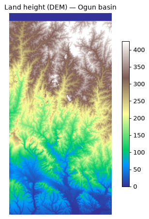
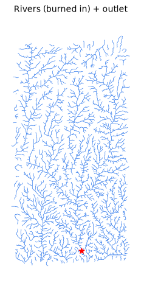
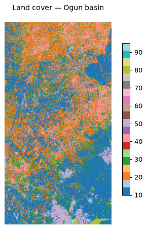
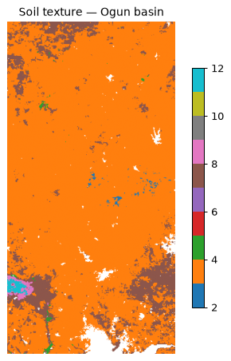
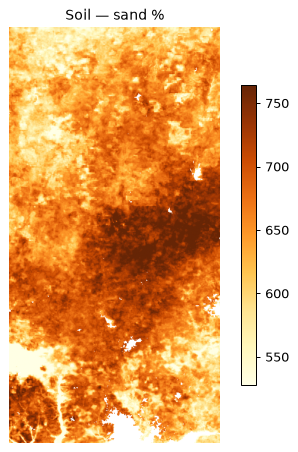
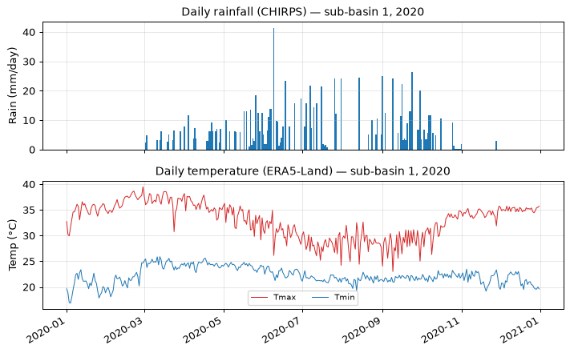
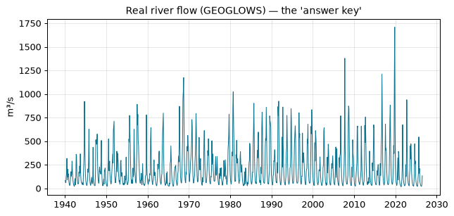
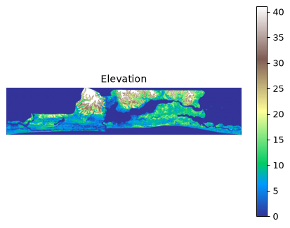
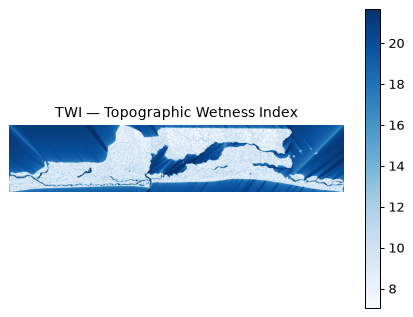
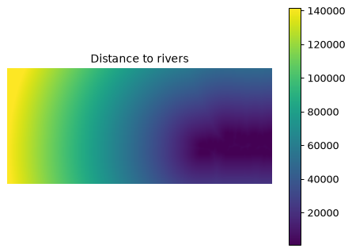
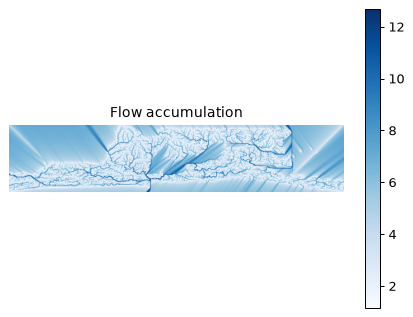
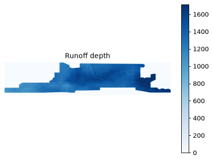
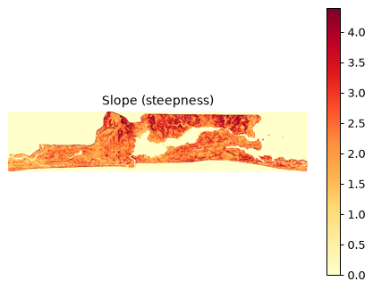
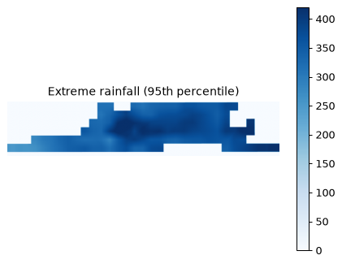
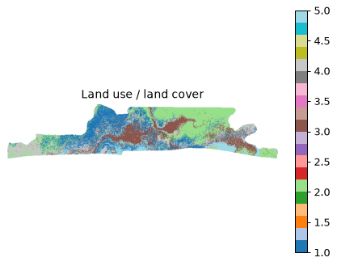
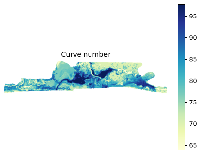
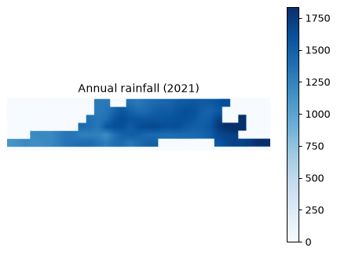
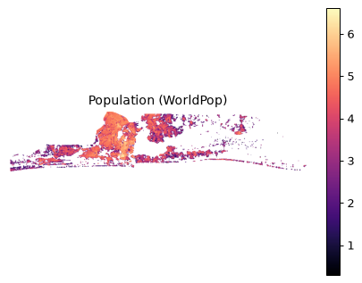
These are small enough to include directly — open them in Excel:
ogun_pcp_daily.csv — 3 MBogun_tmp_daily.csv — 6 MBgeoglows_ogun_kara_140585128_daily.csv — 1002 KBgeoglows_ogun_kara_140585128_monthly.csv — 16 KBexposure_by_lga.csv — 1 KBexposure_by_zone.csv — 227 Bnimet_climatology.csv — 710 Bnimet_annual_series.csv — 2 KBahp_weights.txt — 530 BGenerated for Attah Gbubemi David · University of Lagos.